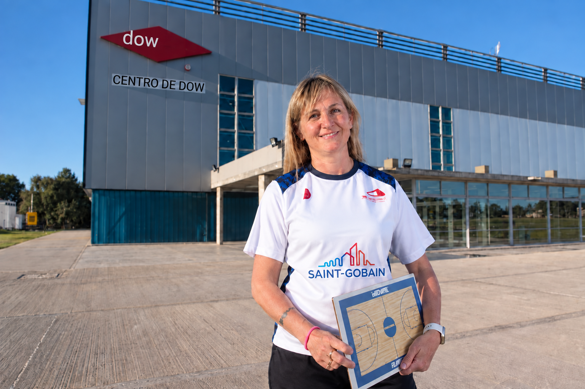

1985
Mar del Plata
Empieza a dirigir
Con dieciocho años da sus primeros pasos como entrenadora en Kimberley.
Basketball Concepts
Más de tres décadas formando equipos, desarrollando talento y abriendo caminos en el básquet.
Bahía Blanca, Argentina
Su historia
Jugadora de Selección Argentina. Entrenadora de equipos formativos y profesionales. Referente de una generación que transformó la cancha en un espacio de oportunidad.

Laura comenzó a jugar a los nueve años en San Lorenzo del Sud. A los dieciocho ya entrenaba en Mar del Plata y, desde entonces, cada equipo fue también un aula: un lugar para aprender, competir y construir confianza.
Pasó por Quilmes, Kimberley y Peñarol antes de llegar a Lanús en 1996. Allí desarrolló durante más de dos décadas una de las canteras femeninas más reconocidas del país y encontró el puente hacia las selecciones nacionales.
Leer la entrevistaBusco ser mi mejor versión.
Laura Cors
Un capítulo histórico
En 2020 integró el cuerpo técnico horizontal de Bahía Basket. Su responsabilidad sobre la defensa la llevó al máximo nivel del básquet masculino argentino y abrió una puerta que hasta entonces no existía.
Conocer el hitoTrayectoria
De Bahía Blanca a Ecuador, una línea de tiempo construida alrededor de la formación, la competencia y el liderazgo.
Con dieciocho años da sus primeros pasos como entrenadora en Kimberley.
Comienza una etapa de veinticuatro años como jugadora, entrenadora y formadora.
Se incorpora al trabajo de selecciones femeninas formativas nacionales.
Títulos sudamericanos, oro 3×3 en 2017 y participación en Buenos Aires 2018.
Primera mujer en integrar y dirigir un cuerpo técnico de la Liga Nacional.
Conduce proyectos profesionales en la Liga Femenina y la Liga Argentina.
Trabajo integral con la selección U17, entrenadores y talentos de todo el país.
Campus Laura Cors
Programas para entrenadores, formadores y clubes que quieren construir mejores contextos de aprendizaje.
Táctica y estrategia
Principios para diseñar una defensa reconocible, entrenable y adaptable al equipo.
Liderazgo
Comunicación, roles y cultura de trabajo para sostener procesos de alto rendimiento.
Básquet formativo
Una mirada pedagógica sobre fundamentos, hábitos y progresión en edades tempranas.
Para clubes y federaciones
Jornadas presenciales, observación de entrenamientos y capacitación de cuerpos técnicos.
Consultar propuestaEl verdadero resultado es que cada persona termine el proceso con más herramientas de las que tenía al empezar.
Una filosofía de formación
En los medios
Entrevistas, perfiles y noticias para conocer su mirada en primera persona.
Una conversación sobre liderazgo, oportunidad y el regreso a Bahía Blanca.
El salto profesional que rompió paradigmas en el básquet masculino argentino.
Capacitación, detección de talento y desarrollo del básquet femenino.
Su llegada a Bahía Basket y el valor colectivo de ser la primera.
Contacto
Para capacitaciones, clínicas, conferencias, prensa o proyectos con clubes y federaciones.